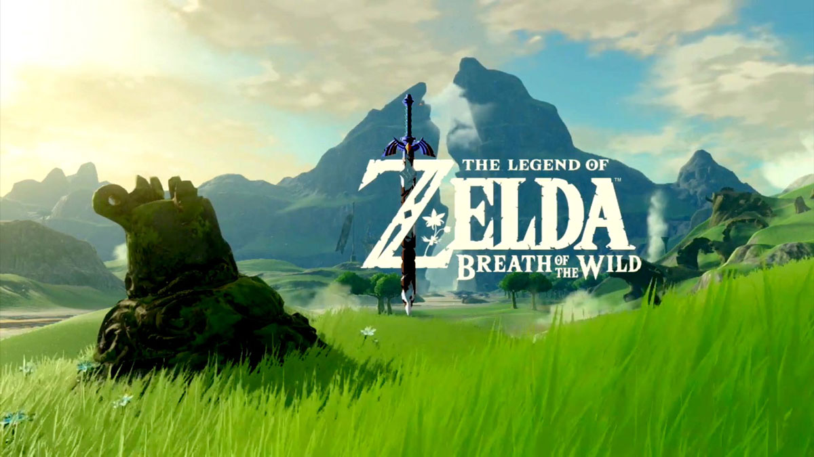
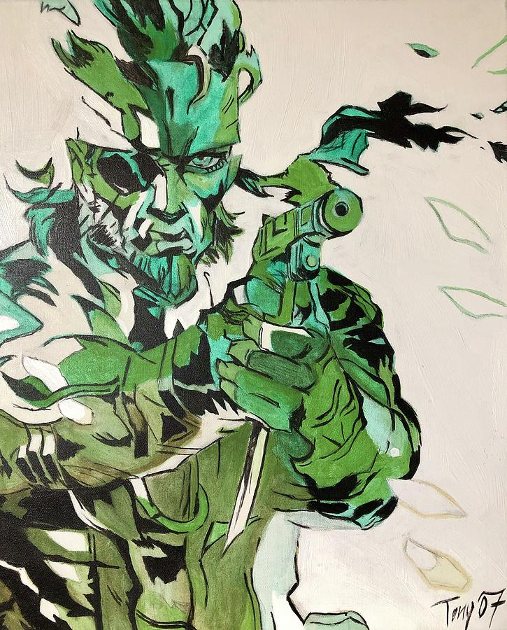
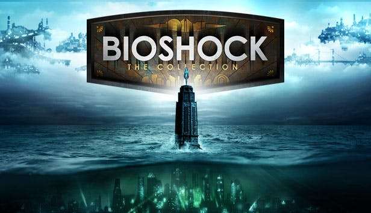

1. The Legend of Zelda: Breath of the Wild
The legend of Zelda: Breath of the Wild is almost definitely my favorite video game. I've been a fan of the Legend of Zelda series for a long time, with the entire series easily making this list, but I wanted to specifically note BOTW as it is singularly my favorite video game ever. The story, the characters, and the amazing way the world is built to be fun and interesting, but also completely define the tone of everything the game does, story wise. It truly is one of the best games ever.
2. The Metal Gear Solid Series
From this point on, almost everything in this list is tied, and if it's an entire series I may mention which one I think is the best, but if I truly thought about it I'd eventually decide they're all equal. Metal Gear Solid is arguably the best video game series ever. Each entry in the main series was revolutionary in it's time, and every entry still hold up today, in my opinion, minus the first 2 games. Overall, the series tells an amazing and dramatic story that I completely adore , and it has some of the best fights in any media. The level of consistency in quality of each game is something I don't think many game series can man, if any.
3. The Bioshock Series
The Bioshock series is one of the most beautiful series I've ever played. Bioshock 1 and 2 both take place in Rapture, easily one of the coolest video game settings ever, and is almost equally matched by Columbia in Bioshock Infinite. The story of both 1 and Infinite are masterpieces in story telling, rivalling movies and books alike. I enjoy 2, but it understandably takes some flak for it's subpar by comparison story. Bioshock Infinite is my favorite entry in the series, including the DLC that was released for the game, Burial at Sea. Bioshock Infinite is one of the few games that is so beautiful that no matter how much graphics progress, it will still be one of the most gorgeous games you can play. In my opinion Bioshock 1 < Bioshock Infinite, which I think a lot of people disagree with.